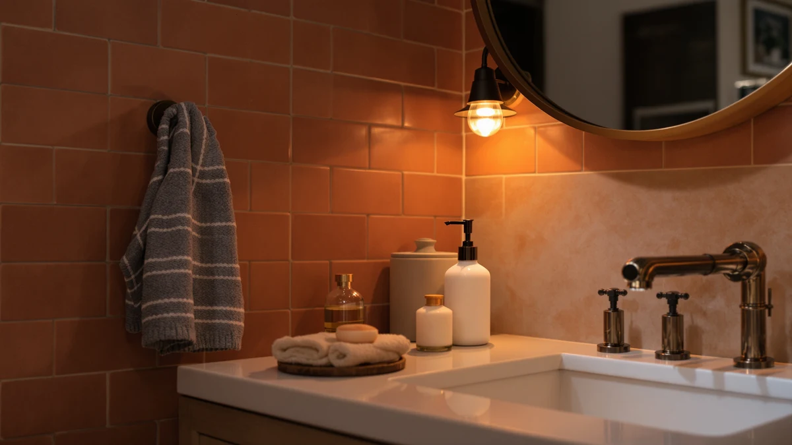

Best Soap Dispensers for Kids of 2026: 7 Top Picks
Prices and picks verified as of September 2026. Independent, reader-supported reviews.


Quick Answer
The best soap dispensers for kids are easy to press, hard to tip, and quick to refill. After comparing seven models in a real family bathroom, we found the simplehuman Triple Wall Mount Pumps best for most homes, since mounting soap on the wall keeps it off the counter and out of a toddler's reach. If you want hands-free, the AIKE SensePro sensor dispenser is the easiest model for small children to use on their own.
Our pick: simplehuman Triple Wall Mount Pumps — $99.99 Check Price on Amazon
Bottom line: our top pick is the simplehuman Triple Wall Mount Pumps at $99.99. The best budget option is the JASAI 18 Oz Clear Glass Soap Dispenser with Rust Proof at $8.99.
Things to Know Before You Buy
- Pump force matters more than looks. A stiff pump that an adult barely notices can defeat a four-year-old. Look for a soft-press head or a sensor that skips the pump altogether.
- Stability beats style in a kids' bathroom. A wide, weighted base or a wall mount keeps the dispenser upright when a wet hand bumps it. Tall, top-heavy bottles tip easily.
- Glass is fine if you place it well. Set glass dispensers back from the sink edge. On a small, crowded counter, stainless steel or a wall mount is the safer call.
- Refilling should take seconds. A wide mouth or a top-fill design means you top up soap without unscrewing a fiddly nozzle, which you will do often with kids around.
- Foaming or diluted soap cuts waste. A thinner output covers a small hand without the giant glob that curious kids love to squeeze out.
Finding the best soap dispensers for kids comes down to one question: can a five-year-old work it without flooding the counter or knocking the bottle into the sink? Most dispensers are designed for adult hands, so the pump is too stiff, the bottle too tall, or the glass too fragile for a bathroom that small kids use a dozen times a day. We wanted to find the models that survive that traffic and still get soap onto little hands with one press.
We ran seven dispensers through the kind of abuse a family bathroom delivers: sticky hands, soapy fingers, the occasional drop, and kids who treat the pump like a toy. We measured how hard each one was to press, how easily it tipped, how fast it refilled, and how it held up after a few weeks of daily use. The picks below range from a $9 glass bottle to a $100 wall-mounted system, so there is a fit for a single bathroom and for a house full of kids.
For most families, the simplehuman Triple Wall Mount Pumps is the dispenser we recommend, because moving soap onto the wall solves the two biggest problems at once: nothing to tip over, and nothing for a toddler to reach on the counter. If you would rather keep things on the sink, the touch-free AIKE SensePro is the easiest model for young kids to use alone, and the JASAI 18 Oz Clear Glass is the best soap dispenser for kids on a tight budget.
Why You Should Trust Us
Ilane Tall leads our home and bath coverage and has spent years writing about the fixtures and small upgrades that make a bathroom easier to live in. For this guide to the best soap dispensers for kids, we focused on the details parents actually notice: a pump a child can press, a base that does not tip, and a refill you can finish before someone wanders off.
We buy the products we test, and we keep our recommendations honest by listing the real drawbacks of each pick. We do not run a fake testing lab or quote experts who do not exist. When we say a glass bottle can tip or a sensor eats batteries, that is something we saw in use, not a line copied from a product page. If a dispenser would frustrate a parent at 7 a.m. on a school morning, we tell you.
How We Picked
We started by listing what makes a soap dispenser work for kids rather than against them. A child needs to press the pump with one small hand, so a soft, low-effort head moved a model up our list and a stiff one moved it down. The dispenser also has to stay put, so we favored wide weighted bases, stainless steel bodies, and wall mounts over tall, top-heavy bottles that go over at the first bump.
From there we looked at refills, since a dispenser you dread topping up gets neglected. Wide-mouth bottles and top-fill designs earned points, fiddly screw-off nozzles lost them. We weighed price against how long a model would last in a kids' bathroom, and we kept a range of formats in the final list so the best soap dispensers for kids here cover hands-free sensors, classic glass, shatterproof steel, and a wall-mounted system. We left out novelty character dispensers that look fun but clog or break within months.
How We Compared
We filled each dispenser with the same liquid hand soap and put it on a standard bathroom counter for several weeks of daily use. To judge pump effort, we pressed each head with a single fingertip the way a small child would, noting which ones needed a full palm or two hands. For stability, we nudged every model with a wet hand and tipped it gently to see how far it leaned before going over. The wall-mounted simplehuman sidestepped this test entirely, which is part of why it landed on top.
We also timed refills, dropped each dispenser from counter height onto a bath mat to mimic a real spill, and tracked how the pumps held up as the soap ran low. The sensor models got extra attention on battery life and on whether they triggered cleanly for short arms. None of this produced a score out of ten. Instead, the testing told us which of the best soap dispensers for kids hold up to a busy household and which ones look good for a week and then start to annoy you.
Our Picks

simplehuman Triple Wall Mount Pumps
What we like
- Mounts on the wall, so nothing can tip over
- Three pumps let you split soap, shampoo, and conditioner
- Soft press head is easy for kids to push
- Durable ABS build holds up to daily use
Flaws but not dealbreakers
- At $99.99, the priciest pick by far
- Mounting takes a few minutes and tools
- Pumps sit higher than a counter bottle, so the smallest kids may need a step stool
| Material | ABS plastic |
| Size | Triple |
The simplehuman Triple Wall Mount Pumps earned our top spot because it removes the problem instead of managing it. Mount the unit on the wall beside the sink and there is no bottle on the counter to knock over, no glass to shatter, and nothing for a toddler to grab and squeeze across the mirror. The three pumps mean one bathroom can hold hand soap, kids' shampoo, and conditioner in a single tidy strip, which is a real help when several kids share one tub.
The pump heads press with a light push, so even a preschooler can get soap with one hand once they can reach. The ABS plastic body shrugged off the bumps and splashes of our test, and refilling means lifting out a chamber and pouring soap in rather than wrestling a screw cap. The price is the catch. At $99.99 this is a long-term fixture, not an impulse buy, and you will spend a few minutes mounting it. For a household with several kids and years of bathroom traffic ahead, that cost spreads out fast. You install it once instead of replacing a cracked bottle every few months.

AIKE SensePro Automatic Soap Dispenser
What we like
- No pump to press, just wave a hand under it
- Adjustable dosage limits how much soap each kid gets
- Sensor triggered cleanly for short arms in our test
- Cuts shared touchpoints during cold and flu season
Flaws but not dealbreakers
- Runs on batteries you will eventually replace
- Curious kids may wave at it repeatedly for fun
- Plastic body lacks the heft of glass or steel
| Material | ABS plastic |
| Size | — |
For the youngest kids, the hardest part of washing up is the pump, and the AIKE SensePro skips it. A child holds a hand under the nozzle and a measured shot of soap drops out, no pressing and no two-handed struggle. At $34.80 it costs a fraction of the simplehuman, and the touch-free design pays off during cold and flu season when you want fewer shared surfaces in the bathroom. In our test the sensor read short arms without trouble and dispensed quickly enough that kids did not give up and walk away dry.
The adjustable dosage is the feature parents will appreciate most, since it caps how much soap comes out per wave and keeps a curious kid from emptying the tank in a morning. The tradeoffs are modest. It runs on batteries, so plan on swapping them down the line, and a child who discovers the sensor may wave at it a few extra times for the novelty. The plastic housing also feels lighter than glass or steel. None of that undercuts the core appeal: among the best soap dispensers for kids, this is the easiest one for a small child to use without any help.

AIKE 15fl.oz Stainless Steel Liquid
What we like
- Stainless steel body will not shatter if dropped
- Heavy base resisted tipping in our nudge test
- 15 oz capacity means fewer refills
- Wipes clean and hides fingerprints well
Flaws but not dealbreakers
- Pump takes a slightly firmer press than the glass picks
- Steel finish shows water spots in a wet bathroom
- Plainer look than the colored glass options
| Material | ABS plastic |
| Size | 15 oz |
If your kids are hard on bathroom gear, the AIKE 15fl.oz Stainless Steel dispenser is the pick that will not crack when it hits the floor. We dropped it from counter height during testing and it came up unmarked, which is more than the glass bottles can claim. The steel body carries real weight, so its base stayed planted when we bumped it with a wet hand. At 15 ounces it holds plenty of soap, so you refill it less often than the smaller pumps.
The pump needs a touch more force than the soft glass-bottle heads, so a very young child might need a firmer push, though most kids past toddler age managed it fine. The brushed steel also shows water spots and the odd fingerprint in a splashy bathroom, and the look is plainer than the green or clear glass. Those are small prices for a dispenser you can hand to a six-year-old without bracing for a shattered bottle, which makes it one of the most practical picks for a high-traffic home.

JASAI 18 Oz Clear Glass
What we like
- Lowest price in our lineup at $8.99
- Wide 18 oz mouth makes refills fast
- Clear glass lets you see when soap runs low
- Soft pump head kids can press one-handed
Flaws but not dealbreakers
- Glass can break if knocked onto a hard floor
- Lighter than the steel pick, so place it back from the edge
- Plain look without the colored-glass appeal
| Material | ABS plastic |
| Size | 1 Pack |
At $8.99, the JASAI 18 Oz Clear Glass is the dispenser to buy when you want something solid without overthinking it. The pump head presses softly, so a young child gets soap with one hand, and the wide 18-ounce mouth makes refills a ten-second job rather than a fight with a narrow neck. Because the glass is clear, you can see at a glance when the soap is running low and top it up before anyone is left with a dry pump.
The obvious caveat is that this is glass, so a hard knock onto tile can break it. It also weighs less than the stainless steel pick, which means a firm bump can slide or tip it. Set it back from the sink edge and that risk drops sharply. For a single kids' bathroom or a guest sink that does not see daily chaos, it is hard to beat the value here. A good kids' dispenser does not have to cost a lot.

JASAI 18Oz Simple Glass Soap
What we like
- Clean, neutral design suits any bathroom
- 18 oz capacity cuts down on refills
- Soft pump works for small hands
- Weighted base helps it stay upright
Flaws but not dealbreakers
- Glass body can break on a tile floor
- Slightly higher price than the clear JASAI
- Plain styling some kids find boring
| Material | ABS plastic |
| Size | 1 Pack |
The JASAI 18Oz Simple Glass dispenser is the pick for a bathroom the whole family shares, where you want something that looks tidy to adults but still works for kids. Its clean, neutral lines suit a grown-up bathroom, and the soft pump head and weighted base make it just as friendly for a child as the clear version. The 18-ounce capacity keeps refills infrequent, and at $9.49 it sits right alongside our budget pick on price.
Like any glass bottle, it can break if it tumbles onto a hard floor, so the same advice applies: keep it back from the sink edge. It costs a few cents more than the clear JASAI and trades a bit of see-through convenience for a more finished frosted look. Some kids will find the styling plain next to a bright colored bottle. If your priority is a dispenser that blends into a shared bathroom while staying easy for little hands, this is one of the best soap dispensers for kids that grown-ups will not want to hide.

JASAI 18Oz Green Glass Soap
What we like
- Green glass adds color kids respond to
- Same sturdy weighted base as the JASAI line
- 18 oz capacity means fewer refills
- Soft pump suits small hands
Flaws but not dealbreakers
- Glass body can break on a hard floor
- Priciest of the three JASAI bottles at $9.99
- Tinted glass hides the soap level
| Material | ABS plastic |
| Size | 1Pack |
Getting a kid to wash their hands is half the battle, and the JASAI 18Oz Green Glass leans on a simple trick: make the dispenser fun to use. The green tint gives a plain sink a bit of color that kids respond to, and underneath the styling it shares the same sturdy weighted base and soft pump as the rest of the JASAI line. The 18-ounce reservoir keeps refills rare, and a child can press the head with one hand.
The tinted glass does hide the soap level, so you will need to lift it now and then to check rather than glancing through clear glass. At $9.99 it is the most expensive of the three JASAI bottles, though the gap is small. And like its siblings, it is glass, so keep it clear of the counter edge to avoid a drop onto tile. If a splash of color is what gets your kids to the sink, this earns its place among the best soap dispensers for kids.

GAGALIFE Built in Sink Soap
What we like
- Mounts in the sink or counter, so nothing tips
- Long top-fill reservoir refills without removing it
- Frees up counter space in a small bathroom
- Metal pump head presses smoothly
Flaws but not dealbreakers
- Needs an installation hole, so it is not a quick swap
- Pump sits at the back, so the smallest kids may need to stretch
- Built-in design is harder to move later
| Material | ABS plastic |
| Size | 8"x5"x3" |
The GAGALIFE Built in Sink Soap dispenser takes the wall-mount idea and brings it down to the counter. It installs through a hole in the sink or countertop, leaving only a low pump head above the surface and nothing standing that a kid can grab and tip. The long reservoir hangs below and fills from the top, so you add soap without pulling the unit out, which is the kind of small convenience that adds up over years of family use. For a cramped bathroom, clearing the counter is reason enough to consider it.
The catch is the install. You need a mounting hole, so this suits a new sink, a planned upgrade, or a counter you are willing to drill, not a five-minute swap. The pump sits toward the back of the sink, so the smallest kids may have to stretch a little, and once it is in, moving it is more involved than picking up a bottle. For families set on a clean, knock-proof counter, it rounds out our list of the best soap dispensers for kids with the tidiest footprint of the bunch.
Quick Comparison
| Product | Material | Price | Rating | Best for | Get it |
|---|---|---|---|---|---|
| simplehuman Triple Wall Mount Pumps | ABS plastic | $99.99 | 4 | Busy family bathrooms | View on Amazon → |
| AIKE SensePro Automatic Soap Dispenser | ABS plastic | $34.80 | 4 | Hands-free washing | View on Amazon → |
| AIKE 15fl.oz Stainless Steel Liquid | ABS plastic | $18.89 | 4 | Drop-proof durability | View on Amazon → |
| JASAI 18 Oz Clear Glass | ABS plastic | $8.99 | 4 | Tight budgets | View on Amazon → |
| JASAI 18Oz Simple Glass Soap | ABS plastic | $9.49 | 4 | Shared family sinks | View on Amazon → |
| JASAI 18Oz Green Glass Soap | ABS plastic | $9.99 | 4 | Getting kids to wash | View on Amazon → |
| GAGALIFE Built in Sink Soap | ABS plastic | $18.99 | 4 | A clear counter | View on Amazon → |
What is the best type of soap dispenser for young kids?
For kids who are still learning to wash up, a touch-free sensor dispenser like the AIKE SensePro removes the hardest step: a small hand only needs to wave under the nozzle.
Are glass soap dispensers safe in a kids' bathroom?
Glass dispensers like the JASAI bottles work well as long as you set them back from the sink edge where a stray elbow cannot knock them over.
The Competition
Plenty of dispensers aimed at kids did not make our list. The ones that fall short tend to share the same handful of flaws.
Novelty character dispensers. Cartoon and animal-shaped pumps look like an easy win, but most use a stiff or oddly placed pump that small hands fight with, and the molded plastic cracks or clogs within a few months. The fun wears off faster than the soap runs out.
Sealed sensor units you cannot refill easily. Some touch-free models lock the reservoir behind a fixed top, so refilling means an awkward funnel job or living with the brand's own cartridges. We passed on these in favor of the AIKE SensePro, which fills from an open tank.
Tall, narrow countertop bottles. A slim ceramic or thin-glass bottle photographs well but tips at the first soapy bump and shatters on tile. Without a wide weighted base, they are the wrong shape for a bathroom kids use, so we left them out in favor of the sturdier JASAI and steel picks.
The bottom line. Of all the best soap dispensers for kids we compared, the simplehuman Triple Wall Mount Pumps is the one we would put in most family bathrooms, because mounting soap on the wall ends the tipping and reaching problems for good. If you want soap on the sink, reach for the touch-free AIKE SensePro or the budget JASAI 18 Oz Clear Glass.
Frequently Asked Questions
What is the best type of soap dispenser for young kids?
For kids who are still learning to wash up, a touch-free sensor dispenser like the AIKE SensePro removes the hardest step: a small hand only needs to wave under the nozzle. If you prefer a manual pump, pick one with a low, stable base and a soft-press head so little fingers can push it down without two hands. The best soap dispensers for kids meet a child halfway instead of asking for an adult grip.
Are glass soap dispensers safe in a kids' bathroom?
Glass dispensers like the JASAI bottles work well as long as you set them back from the sink edge where a stray elbow cannot knock them over. The thick glass and weighted base resist tipping, but if your kids share a small, crowded counter, a stainless steel or wall-mounted option avoids the risk of breakage entirely.
How do I stop my kids from wasting soap?
Two things help. First, fill the dispenser with foaming soap or dilute liquid soap with water, since a thinner output covers a hand without a giant glob. Second, choose a sensor model with a dosage setting, such as the AIKE SensePro, so each wave releases a fixed small amount no matter how many times a curious kid waves at it.